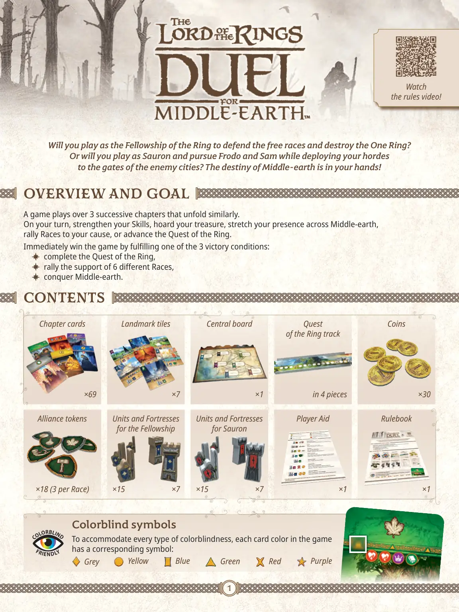
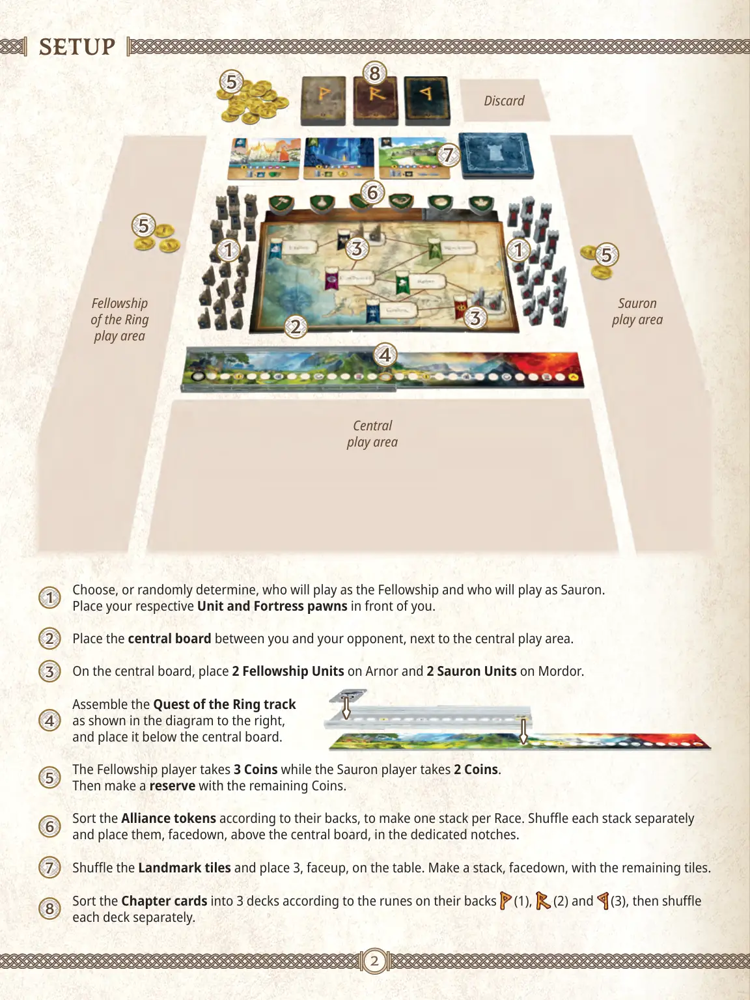
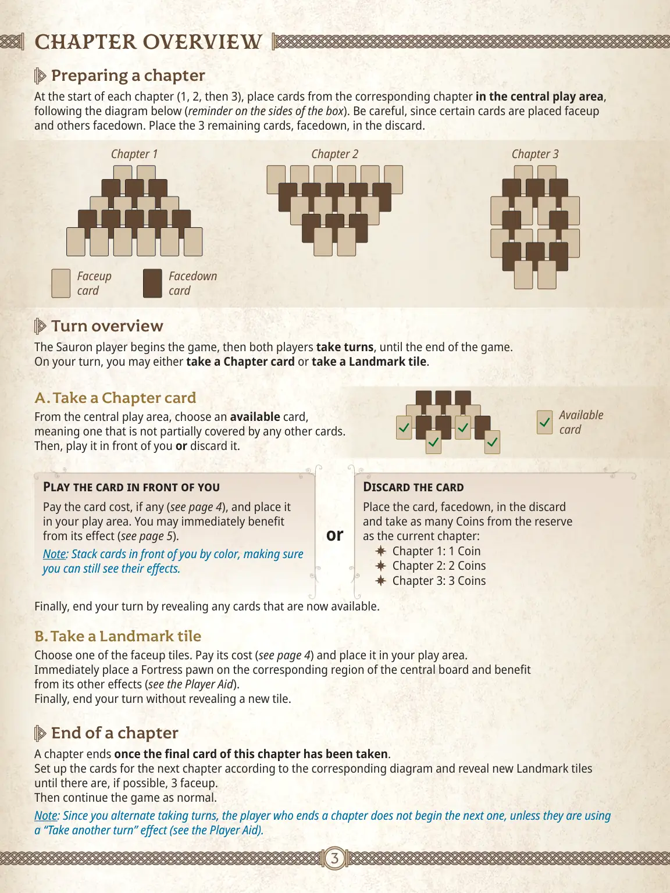
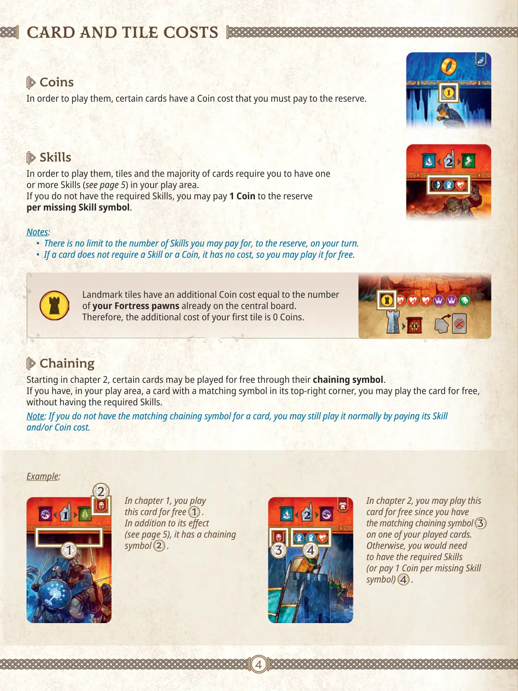
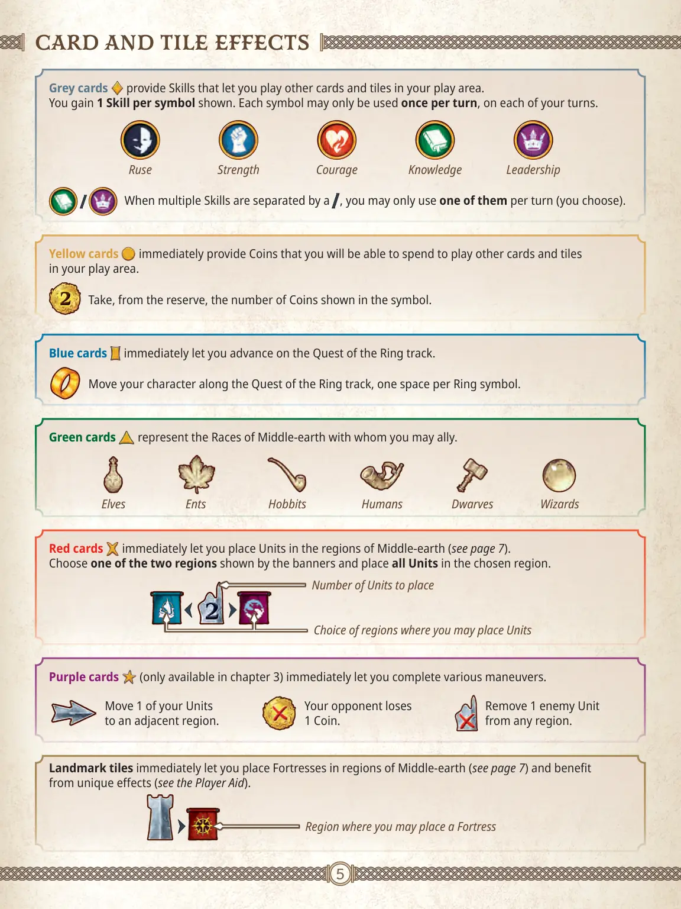
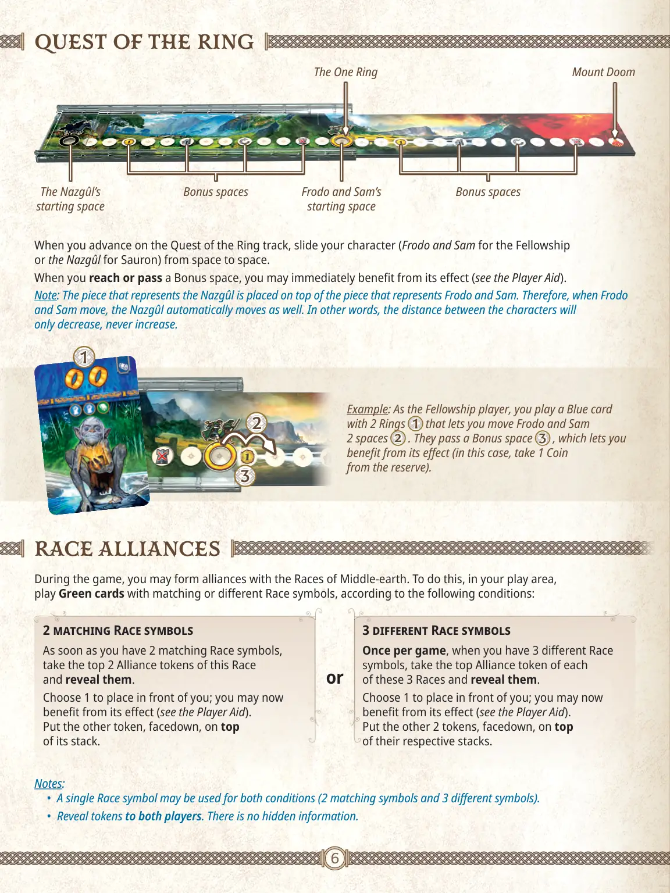
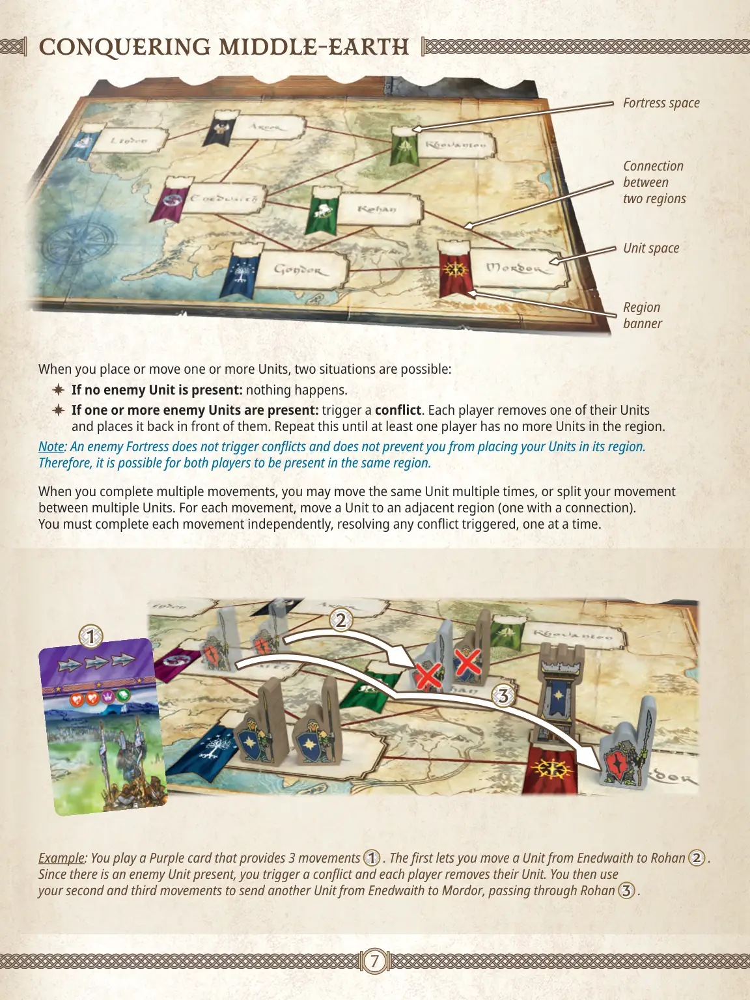
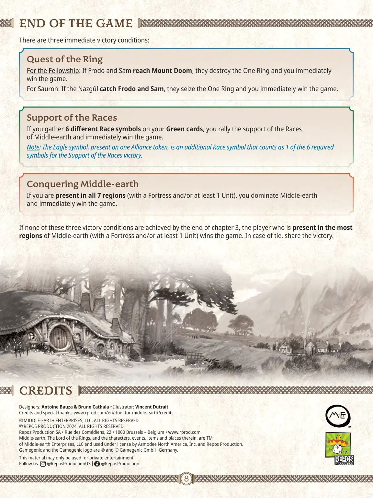

<!DOCTYPE html>
<html lang="zh-CN">
<head>
  <meta charset="UTF-8">
  <meta name="viewport" content="width=device-width, initial-scale=1.0, viewport-fit=cover">
  <meta name="description" content="《魔戒：中土对决》（The Lord of the Rings: Duel for Middle-earth）官方英文规则书全文中文翻译：双人对抗 · 七张路线牌，8 页整本译出，含设置、流程、计分与附录，附官方原文 PDF 链接。">
  <title data-zh="魔戒：中土对决 (The Lord of the Rings: Duel for Middle-earth) · 规则 — 桌游规则书" data-en="The Lord of the Rings: Duel for Middle-earth · Rules — Board Game Rules">魔戒：中土对决 (The Lord of the Rings: Duel for Middle-earth) · 规则 — 桌游规则书</title>
  <link rel="icon" href="data:image/svg+xml,<svg xmlns='http://www.w3.org/2000/svg' viewBox='0 0 100 100'><text y='0.9em' font-size='90'>🌋</text></svg>">
  <link rel="stylesheet" href="../assets/css/style.css">
  <link rel="canonical" href="https://rule.zhibinai.cn/games/lotr-duel-for-middle-earth.html">
  <meta property="og:site_name" content="桌游规则书">
  <meta property="og:locale" content="zh_CN">
  <meta property="og:type" content="article">
  <meta property="og:title" content="魔戒：中土对决 (The Lord of the Rings: Duel for Middle-earth) · 规则 — 桌游规则书">
  <meta property="og:description" content="《魔戒：中土对决》（The Lord of the Rings: Duel for Middle-earth）官方英文规则书全文中文翻译：双人对抗 · 七张路线牌，8 页整本译出，含设置、流程、计分与附录，附官方原文 PDF 链接。">
  <meta property="og:url" content="https://rule.zhibinai.cn/games/lotr-duel-for-middle-earth.html">
  <meta property="og:image" content="https://rule.zhibinai.cn/assets/img/lotr-duel-for-middle-earth/01.webp">
  <meta name="twitter:card" content="summary_large_image">
  <meta name="twitter:title" content="魔戒：中土对决 (The Lord of the Rings: Duel for Middle-earth) · 规则 — 桌游规则书">
  <meta name="twitter:description" content="《魔戒：中土对决》（The Lord of the Rings: Duel for Middle-earth）官方英文规则书全文中文翻译：双人对抗 · 七张路线牌，8 页整本译出，含设置、流程、计分与附录，附官方原文 PDF 链接。">
  <script type="application/ld+json">{
 "@context": "https://schema.org",
 "@graph": [
  {
   "@type": "WebSite",
   "@id": "https://rule.zhibinai.cn/#website",
   "name": "桌游规则书",
   "url": "https://rule.zhibinai.cn/",
   "inLanguage": "zh-CN",
   "description": "免费中文桌游规则书查询站：热门桌游完整中文规则全文 + Board Game Arena 全量官方规则中文版。"
  },
  {
   "@type": "WebPage",
   "@id": "https://rule.zhibinai.cn/games/lotr-duel-for-middle-earth.html",
   "url": "https://rule.zhibinai.cn/games/lotr-duel-for-middle-earth.html",
   "name": "魔戒：中土对决 (The Lord of the Rings: Duel for Middle-earth) · 规则 — 桌游规则书",
   "description": "《魔戒：中土对决》（The Lord of the Rings: Duel for Middle-earth）官方英文规则书全文中文翻译：双人对抗 · 七张路线牌，8 页整本译出，含设置、流程、计分与附录，附官方原文 PDF 链接。",
   "isPartOf": {
    "@id": "https://rule.zhibinai.cn/#website"
   },
   "inLanguage": "zh-CN",
   "dateModified": "2026-11-09",
   "primaryImageOfPage": {
    "@type": "ImageObject",
    "url": "https://rule.zhibinai.cn/assets/img/lotr-duel-for-middle-earth/01.webp"
   }
  },
  {
   "@type": "BreadcrumbList",
   "itemListElement": [
    {
     "@type": "ListItem",
     "position": 1,
     "name": "首页",
     "item": "https://rule.zhibinai.cn/"
    },
    {
     "@type": "ListItem",
     "position": 2,
     "name": "魔戒：中土对决 (The Lord of the Rings: Duel for Middle-earth)",
     "item": "https://rule.zhibinai.cn/games/lotr-duel-for-middle-earth.html"
    }
   ]
  }
 ]
}</script>
  <!-- seo-wired -->
</head>
<body data-theme="lotr-duel-for-middle-earth" data-game-key="lotr-duel-for-middle-earth">

  <div class="progress-bar" aria-hidden="true"></div>

  <header class="topbar">
    <button class="menu-btn" aria-label="打开目录" aria-expanded="false" data-i18n-aria="openToc">☰</button>
    <a class="brand" href="../index.html" data-i18n="brand">🎲 桌游规则书</a>
    <span class="topbar-title" data-zh="魔戒：中土对决" data-en="The Lord of the Rings: Duel for Middle-earth">魔戒：中土对决</span>
  </header>

  <div class="layout">
    <aside class="sidebar" id="sidebar">
      <nav class="toc" aria-label="本页目录" data-i18n-aria="onThisPage">
        <div class="toc-title" data-i18n="onThisPage">本页目录</div>
        <ul id="toc-list"></ul>
      </nav>
      <nav aria-label="全部游戏" data-i18n-aria="allGames">
        <div class="toc-title" data-i18n="allGames">全部游戏</div>
        <ul>
          <li><a href="../index.html" data-i18n="home">🏠 返回首页</a></li>
          <li><a href="7-wonders.html" data-zh="🏛️ 七大奇迹" data-en="🏛️ 7 Wonders">🏛️ 七大奇迹</a></li>
          <li><a href="brass-birmingham.html" data-zh="🏭 工业革命：伯明翰" data-en="🏭 Brass: Birmingham">🏭 工业革命：伯明翰</a></li>
          <li><a href="vale-of-eternity.html" data-zh="✨ 永恒之谷" data-en="✨ The Vale of Eternity">✨ 永恒之谷</a></li>
          <li><a href="wingspan.html" data-zh="🦜 展翅翱翔" data-en="🦜 Wingspan">🦜 展翅翱翔</a></li>
          <li><a href="pokemon-grove.html" data-zh="🌳 宝可梦林地探索" data-en="🌳 Pokemon Grove">🌳 宝可梦林地探索</a></li>
          <li><a href="puerto-rico.html" data-zh="⛵ 波多黎各" data-en="⛵ Puerto Rico">⛵ 波多黎各</a></li>
          <li><a href="barcelona.html" data-zh="🌸 巴塞罗那" data-en="🌸 Barcelona">🌸 巴塞罗那</a></li>
          <li><a href="dune-imperium.html" data-zh="🏜️ 沙丘：帝国" data-en="🏜️ Dune: Imperium">🏜️ 沙丘：帝国</a></li>
          <li><a href="dune-imperium-uprising.html" data-zh="🪱 沙丘：帝国起义" data-en="🪱 Dune: Imperium – Uprising">🪱 沙丘：帝国起义</a></li>
          <li><a href="ascension.html" data-zh="🃏 创升纪元" data-en="🃏 Ascension">🃏 创升纪元</a></li>
          <li><a href="tulip-bubble.html" data-zh="🌷 郁金香泡沫" data-en="🌷 Tulip Bubble">🌷 郁金香泡沫</a></li>
          <li><a href="trajan.html" data-zh="🦅 图拉真" data-en="🦅 Trajan">🦅 图拉真</a></li>
          <li><a href="galileo-galilei.html" data-zh="🔭 伽利略：伽利莱" data-en="🔭 Galileo Galilei">🔭 伽利略：伽利莱</a></li>
          <li><a href="orloj.html" data-zh="🕰️ 奥洛伊：布拉格天文钟" data-en="🕰️ Orloj: The Prague Astronomical Clock">🕰️ 奥洛伊：布拉格天文钟</a></li>
          <li><a href="food-chain-magnate.html" data-zh="🍔 快餐连锁大亨" data-en="🍔 Food Chain Magnate">🍔 快餐连锁大亨</a></li>
          <li><a href="clank-catacombs.html" data-zh="🐉 CLANK! 地下墓穴" data-en="🐉 Clank!: Catacombs">🐉 CLANK! 地下墓穴</a></li>
          <li><a href="clank-catacombs-underworld.html" data-zh="💀 CLANK! 地下墓穴:地下世界" data-en="💀 Clank! Catacombs: Underworld">💀 CLANK! 地下墓穴:地下世界</a></li>
          <li><a href="clank-adventuring-party.html" data-zh="🗡️ CLANK! 冒险队" data-en="🗡️ Clank!: Adventuring Party">🗡️ CLANK! 冒险队</a></li>
          <li><a href="ark-nova-marine-worlds.html" data-zh="🐙 方舟动物园：海洋世界" data-en="🐙 Ark Nova: Marine Worlds">🐙 方舟动物园：海洋世界</a></li>
          <li><a href="arnak-expedition-leaders.html" data-zh="🗿 阿纳克遗迹:探险队长" data-en="🗿 Lost Ruins of Arnak: Expedition Leaders">🗿 阿纳克遗迹:探险队长</a></li>
          <li><a href="speakeasy.html" data-zh="🎷 地下酒吧" data-en="🎷 Speakeasy">🎷 地下酒吧</a></li>
          <li><a href="power-grid.html" data-zh="⚡ 电力公司" data-en="⚡ Power Grid">⚡ 电力公司</a></li>
          <li><a href="seti.html" data-zh="🛰️ SETI：寻找外星人" data-en="🛰️ SETI: Search for Extraterrestrial Intelligence">🛰️ SETI：寻找外星人</a></li>
          <li><a href="seti-space-agencies.html" data-zh="🚀 地外文明：太空机构" data-en="🚀 SETI: Space Agencies">🚀 地外文明：太空机构</a></li>
          <li><a href="white-castle.html" data-zh="🏯 姬路城" data-en="🏯 The White Castle">🏯 姬路城</a></li>
          <li><a href="white-castle-matcha.html" data-zh="🍵 姬路城：茶道" data-en="🍵 The White Castle: Matcha">🍵 姬路城：茶道</a></li>
          <li><a href="endeavor-deep-sea.html" data-zh="🌊 奋进号：深海" data-en="🌊 Endeavor: Deep Sea">🌊 奋进号：深海</a></li>
          <li><a href="druids-of-edora.html" data-zh="🌲 埃多拉的德鲁伊" data-en="🌲 The Druids of Edora">🌲 埃多拉的德鲁伊</a></li>
          <li><a href="grand-austria-hotel.html" data-zh="🏨 奥地利大饭店" data-en="🏨 Grand Austria Hotel">🏨 奥地利大饭店</a></li>
          <li><a href="the-message.html" data-zh="🕵️ 风声再临" data-en="🕵️ The Message">🕵️ 风声再临</a></li>
          <li><a href="gwt-new-zealand.html" data-zh="🐑 大西部开拓者:新西兰" data-en="🐑 Great Western Trail: New Zealand">🐑 大西部开拓者:新西兰</a></li>
          <li><a href="fields-of-arle.html" data-zh="🌾 阿勒農場" data-en="🌾 Fields of Arle">🌾 阿勒農場</a></li>
          <li><a href="gaiaproject-lost-fleet.html" data-zh="🌌 盖亚计划:失落的舰队" data-en="🌌 Gaia Project: The Lost Fleet">🌌 盖亚计划:失落的舰队</a></li>
          <li><a href="spirit-island.html" data-zh="🏝️ 灵迹岛" data-en="🏝️ Spirit Island">🏝️ 灵迹岛</a></li>
          <li><a href="harmonies.html" data-zh="🦁 自然和弦" data-en="🦁 Harmonies">🦁 自然和弦</a></li>
          <li><a href="agricola-revised.html" data-zh="🌾 农场主（修订版）" data-en="🌾 Agricola (Revised Edition)">🌾 农场主（修订版）</a></li>
          <li><a href="final-girl.html" data-zh="🎬 最终女孩" data-en="🎬 Final Girl">🎬 最终女孩</a></li>
          <li><a href="le-havre.html" data-zh="⚓ 勒阿弗尔" data-en="⚓ Le Havre">⚓ 勒阿弗尔</a></li>
          <li><a href="marvel-champions.html" data-zh="🦸 漫威群英传：卡牌版" data-en="🦸 Marvel Champions: The Card Game">🦸 漫威群英传：卡牌版</a></li>
          <li><a href="nemesis.html" data-zh="👽 复仇女神号" data-en="👽 Nemesis">👽 复仇女神号</a></li>
          <li><a href="pandemic-legacy-season-0.html" data-zh="🕵️ 瘟疫危机：传承·第0季" data-en="🕵️ Pandemic Legacy: Season 0">🕵️ 瘟疫危机：传承·第0季</a></li>
          <li><a href="pandemic-legacy-season-1.html" data-zh="🦠 瘟疫危机：传承·第一季" data-en="🦠 Pandemic Legacy: Season 1">🦠 瘟疫危机：传承·第一季</a></li>
          <li><a href="android-netrunner.html" data-zh="🤖 安卓：潜袭" data-en="🤖 Android: Netrunner">🤖 安卓：潜袭</a></li>
          <li><a href="arkham-horror-lcg.html" data-zh="🔍 诡镇奇谈：卡牌版" data-en="🔍 Arkham Horror: The Card Game">🔍 诡镇奇谈：卡牌版</a></li>
          <li><a href="bomb-busters.html" data-zh="💣 拆弹小队" data-en="💣 Bomb Busters">💣 拆弹小队</a></li>
          <li><a href="cascadia.html" data-zh="🌲 卡斯卡迪亚" data-en="🌲 Cascadia">🌲 卡斯卡迪亚</a></li>
          <li><a href="everdell.html" data-zh="🌰 仙境幽谷" data-en="🌰 Everdell">🌰 仙境幽谷</a></li>
          <li><a href="five-tribes.html" data-zh="🏜️ 五大部落" data-en="🏜️ Five Tribes: The Djinns of Naqala">🏜️ 五大部落</a></li>
          <li><a href="kanban-ev.html" data-zh="🚗 看板：电动汽车版" data-en="🚗 Kanban EV">🚗 看板：电动汽车版</a></li>
          <li><a href="lisboa.html" data-zh="🏛️ 里斯本" data-en="🏛️ Lisboa">🏛️ 里斯本</a></li>
          <li><a href="mage-knight.html" data-zh="🧙 魔骑士" data-en="🧙 Mage Knight Board Game">🧙 魔骑士</a></li>
          <li><a href="mansions-of-madness-2e.html" data-zh="🏚️ 疯狂诡宅（第二版）" data-en="🏚️ Mansions of Madness: Second Edition">🏚️ 疯狂诡宅（第二版）</a></li>
          <li><a href="paladins-of-the-west-kingdom.html" data-zh="🛡️ 西王国的圣骑士" data-en="🛡️ Paladins of the West Kingdom">🛡️ 西王国的圣骑士</a></li>
          <li><a href="pandemic-legacy-season-2.html" data-zh="🧭 瘟疫危机：传承·第二季" data-en="🧭 Pandemic Legacy: Season 2">🧭 瘟疫危机：传承·第二季</a></li>
          <li><a href="quacks.html" data-zh="🧪 奎德林堡的江湖郎中" data-en="🧪 Quacks">🧪 奎德林堡的江湖郎中</a></li>
          <li><a href="root.html" data-zh="🦊 茂林源记" data-en="🦊 Root">🦊 茂林源记</a></li>
          <li><a href="slay-the-spire-bg.html" data-zh="🗡️ 杀戮尖塔：版图游戏" data-en="🗡️ Slay the Spire: The Board Game">🗡️ 杀戮尖塔：版图游戏</a></li>
          <li><a href="star-wars-imperial-assault.html" data-zh="🎯 星球大战：帝国突击" data-en="🎯 Star Wars: Imperial Assault">🎯 星球大战：帝国突击</a></li>
          <li><a href="star-wars-rebellion.html" data-zh="🚀 星球大战：叛乱" data-en="🚀 Star Wars: Rebellion">🚀 星球大战：叛乱</a></li>
          <li><a href="the-crew-planet-nine.html" data-zh="🪐 星际探险队：第九行星" data-en="🪐 The Crew: The Quest for Planet Nine">🪐 星际探险队：第九行星</a></li>
          <li><a href="the-gallerist.html" data-zh="🖼️ 画商" data-en="🖼️ The Gallerist">🖼️ 画商</a></li>
          <li><a href="ticket-to-ride-legacy.html" data-zh="🚂 车票之旅：传承·西部传奇" data-en="🚂 Ticket to Ride Legacy: Legends of the West">🚂 车票之旅：传承·西部传奇</a></li>
          <li><a href="tzolkin.html" data-zh="🌀 卓尔金历：玛雅历法" data-en="🌀 Tzolk'in: The Mayan Calendar">🌀 卓尔金历：玛雅历法</a></li>
          <li><a href="underwater-cities.html" data-zh="🌊 水下城市" data-en="🌊 Underwater Cities">🌊 水下城市</a></li>
          <li><a href="blood-on-the-clocktower.html" data-zh="🔔 血染钟楼" data-en="🔔 Blood on the Clocktower">🔔 血染钟楼</a></li>
          <li><a href="oathsworn.html" data-zh="🐺 守誓者：深入密林" data-en="🐺 Oathsworn: Into the Deepwood">🐺 守誓者：深入密林</a></li>
          <li><a href="cthulhu-death-may-die.html" data-zh="🐙 克苏鲁：死亡可能会死" data-en="🐙 Cthulhu: Death May Die">🐙 克苏鲁：死亡可能会死</a></li>
          <li><a href="too-many-bones.html" data-zh="💀 太多骨头" data-en="💀 Too Many Bones">💀 太多骨头</a></li>
          <li><a href="crokinole.html" data-zh="🎯 弹指棋" data-en="🎯 Crokinole">🎯 弹指棋</a></li>
          <li><a href="wingspan-asia.html" data-zh="🐦 展翅翱翔：亚洲" data-en="🐦 Wingspan Asia">🐦 展翅翱翔：亚洲</a></li>
          <li><a href="viticulture.html" data-zh="🍇 葡萄酒庄园（核心版）" data-en="🍇 Viticulture Essential Edition">🍇 葡萄酒庄园（核心版）</a></li>
          <li><a href="twilight-struggle.html" data-zh="🌍 冷战热斗" data-en="🌍 Twilight Struggle">🌍 冷战热斗</a></li>
          <li><a href="on-mars.html" data-zh="🔴 火星之上" data-en="🔴 On Mars">🔴 火星之上</a></li>
          <li><a href="war-of-the-ring.html" data-zh="💍 魔戒圣战" data-en="💍 War of the Ring: Second Edition">💍 魔戒圣战</a></li>
          <li><a href="mechs-vs-minions.html" data-zh="⚙️ 机甲大战小兵" data-en="⚙️ Mechs vs. Minions">⚙️ 机甲大战小兵</a></li>
          <li><a href="clank-legacy.html" data-zh="🐉 咔嚓！传承：收购公司" data-en="🐉 Clank! Legacy: Acquisitions Incorporated">🐉 咔嚓！传承：收购公司</a></li>
          <li><a href="eclipse-second-dawn.html" data-zh="🌌 星蚀：银河二次黎明" data-en="🌌 Eclipse: Second Dawn for the Galaxy">🌌 星蚀：银河二次黎明</a></li>
          <li><a href="voidfall.html" data-zh="🌑 虚空坠落" data-en="🌑 Voidfall">🌑 虚空坠落</a></li>
          <li><a href="sleeping-gods.html" data-zh="🛶 沉睡之神" data-en="🛶 Sleeping Gods">🛶 沉睡之神</a></li>
          <li><a href="gloomhaven.html" data-zh="⚔️ 幽港迷城" data-en="⚔️ Gloomhaven">⚔️ 幽港迷城</a></li>
          <li><a href="gloomhaven-jaws-of-the-lion.html" data-zh="🦁 幽港迷城：雄狮之颚" data-en="🦁 Gloomhaven: Jaws of the Lion">🦁 幽港迷城：雄狮之颚</a></li>
          <li><a href="frosthaven.html" data-zh="❄️ 寒霜迷城" data-en="❄️ Frosthaven">❄️ 寒霜迷城</a></li>
          <li><a href="aeons-end-war-eternal.html" data-zh="💠 末日决战：永恒战争" data-en="💠 Aeon's End: War Eternal">💠 末日决战：永恒战争</a></li>
          <li><a href="arcs.html" data-zh="🌟 星弧航记" data-en="🌟 Arcs">🌟 星弧航记</a></li>
          <li><a href="battlestar-galactica.html" data-zh="🚀 太空堡垒卡拉狄加" data-en="🚀 Battlestar Galactica: The Board Game">🚀 太空堡垒卡拉狄加</a></li>
          <li><a href="codenames.html" data-zh="🕵️ 行动代号" data-en="🕵️ Codenames">🕵️ 行动代号</a></li>
          <li><a href="concordia-venus.html" data-zh="🕊️ 康考迪亚：维纳斯" data-en="🕊️ Concordia Venus">🕊️ 康考迪亚：维纳斯</a></li>
          <li><a href="dominant-species.html" data-zh="🦣 优势物种" data-en="🦣 Dominant Species">🦣 优势物种</a></li>
          <li><a href="iberia.html" data-zh="❓ 伊比利亚（待查词条）" data-en="❓ Iberia">❓ 伊比利亚（待查词条）</a></li>
          <li><a href="istanbul.html" data-zh="🏺 伊斯坦布尔" data-en="🏺 Istanbul">🏺 伊斯坦布尔</a></li>
          <li><a href="lotr-journeys-in-middle-earth.html" data-zh="🗺️ 魔戒：中土之旅" data-en="🗺️ The Lord of the Rings: Journeys in Middle-earth">🗺️ 魔戒：中土之旅</a></li>
          <li><a href="lotr-lcg.html" data-zh="💍 魔戒：卡牌游戏" data-en="💍 The Lord of the Rings: The Card Game">💍 魔戒：卡牌游戏</a></li>
          <li><a href="nemesis-lockdown.html" data-zh="🚪 复仇女神号：封锁" data-en="🚪 Nemesis: Lockdown">🚪 复仇女神号：封锁</a></li>
          <li><a href="rising-sun.html" data-zh="🎴 旭日战魂" data-en="🎴 Rising Sun">🎴 旭日战魂</a></li>
          <li><a href="robinson-crusoe.html" data-zh="🏝️ 鲁滨逊漂流记：诅咒之岛" data-en="🏝️ Robinson Crusoe: Adventures on the Cursed Island">🏝️ 鲁滨逊漂流记：诅咒之岛</a></li>
          <li><a href="star-realms.html" data-zh="🚀 星域奇航？" data-en="🚀 Star Realms">🚀 星域奇航？</a></li>
          <li><a href="tainted-grail.html" data-zh="🕯️ 污痕圣杯：阿瓦隆的陷落" data-en="🕯️ Tainted Grail: The Fall of Avalon">🕯️ 污痕圣杯：阿瓦隆的陷落</a></li>
          <li><a href="the-7th-continent.html" data-zh="🏝️ 第七大陆" data-en="🏝️ The 7th Continent">🏝️ 第七大陆</a></li>
          <li><a href="trickerion.html" data-zh="🎩 幻术师：幻象传奇？" data-en="🎩 Trickerion: Legends of Illusion">🎩 幻术师：幻象传奇？</a></li>
          <li><a href="undaunted-normandy.html" data-zh="🎖️ 无畏：诺曼底" data-en="🎖️ Undaunted: Normandy">🎖️ 无畏：诺曼底</a></li>
          <li><a href="unmatched-cobble-and-fog.html" data-zh="🌫️ 无双对决：雾都？" data-en="🌫️ Unmatched: Cobble &amp; Fog">🌫️ 无双对决：雾都？</a></li>
          <li><a href="viscounts-of-the-west-kingdom.html" data-zh="📜 西王国的子爵" data-en="📜 Viscounts of the West Kingdom">📜 西王国的子爵</a></li>
          <li><a href="age-of-steam.html" data-zh="🚂 蒸汽时代" data-en="🚂 Age of Steam">🚂 蒸汽时代</a></li>
          <li><a href="clank-in-space.html" data-zh="🛸 咔嚓！太空！" data-en="🛸 Clank! In! Space!: A Deck-Building Adventure">🛸 咔嚓！太空！</a></li>
          <li><a href="dominion-2e.html" data-zh="🏰 皇舆争霸（第二版）" data-en="🏰 Dominion (Second Edition)">🏰 皇舆争霸（第二版）</a></li>
          <li><a href="dominion-intrigue.html" data-zh="👑 皇舆争霸：暗潮汹涌（二版）" data-en="👑 Dominion: Intrigue">👑 皇舆争霸：暗潮汹涌（二版）</a></li>
          <li><a href="dwellings-of-eldervale.html" data-zh="🏘️ 永恒谷居所？" data-en="🏘️ Dwellings of Eldervale">🏘️ 永恒谷居所？</a></li>
          <li><a href="eldritch-horror.html" data-zh="🐙 全球惊悚" data-en="🐙 Eldritch Horror">🐙 全球惊悚</a></li>
          <li><a href="endeavor-age-of-sail.html" data-zh="⛵ 奋进：风帆时代" data-en="⛵ Endeavor: Age of Sail">⛵ 奋进：风帆时代</a></li>
          <li><a href="glen-more-2.html" data-zh="🌾 格伦莫尔2：编年史" data-en="🌾 Glen More II: Chronicles">🌾 格伦莫尔2：编年史</a></li>
          <li><a href="hansa-teutonica.html" data-zh="🏛️ 汉萨同盟" data-en="🏛️ Hansa Teutonica">🏛️ 汉萨同盟</a></li>
          <li><a href="inis.html" data-zh="🍀 翠屿秘境（INIS）" data-en="🍀 Inis">🍀 翠屿秘境（INIS）</a></li>
          <li><a href="iss-vanguard.html" data-zh="🛰️ ISS 先锋号" data-en="🛰️ ISS Vanguard">🛰️ ISS 先锋号</a></li>
          <li><a href="kemet.html" data-zh="🐍 凯麦特" data-en="🐍 Kemet">🐍 凯麦特</a></li>
          <li><a href="legendary-encounters-alien.html" data-zh="👽 传奇遭遇：异形" data-en="👽 Legendary Encounters: An Alien Deck Building Game">👽 传奇遭遇：异形</a></li>
          <li><a href="mombasa.html" data-zh="💎 蒙巴萨" data-en="💎 Mombasa">💎 蒙巴萨</a></li>
          <li><a href="quest-for-el-dorado.html" data-zh="🏛️ 竞逐黄金国" data-en="🏛️ The Quest for El Dorado">🏛️ 竞逐黄金国</a></li>
          <li><a href="ra.html" data-zh="☀️ RA 太阳神" data-en="☀️ Ra">☀️ RA 太阳神</a></li>
          <li><a href="radlands.html" data-zh="🌵 辐射荒漠？" data-en="🌵 Radlands">🌵 辐射荒漠？</a></li>
          <li><a href="raiders-of-the-north-sea.html" data-zh="⚓ 北海劫掠者" data-en="⚓ Raiders of the North Sea">⚓ 北海劫掠者</a></li>
          <li><a href="rajas-of-the-ganges.html" data-zh="🐘 恒河王侯" data-en="🐘 Rajas of the Ganges">🐘 恒河王侯</a></li>
          <li><a href="search-for-planet-x.html" data-zh="🔭 搜寻行星 X" data-en="🔭 The Search for Planet X">🔭 搜寻行星 X</a></li>
          <li><a href="sherlock-holmes-cd.html" data-zh="🔍 福尔摩斯：侦探顾问" data-en="🔍 Sherlock Holmes Consulting Detective: The Thames Murders &amp; Other Cases">🔍 福尔摩斯：侦探顾问</a></li>
          <li><a href="sw-outer-rim.html" data-zh="🪙 星球大战：外环" data-en="🪙 Star Wars: Outer Rim">🪙 星球大战：外环</a></li>
          <li><a href="sw-x-wing.html" data-zh="✈️ 星球大战：X 翼战机" data-en="✈️ Star Wars: X-Wing Miniatures Game">✈️ 星球大战：X 翼战机</a></li>
          <li><a href="thats-pretty-clever.html" data-zh="🎲 绝顶聪明" data-en="🎲 That's Pretty Clever!">🎲 绝顶聪明</a></li>
          <li><a href="twilight-imperium-3e.html" data-zh="🪐 帝国曙光：第三版" data-en="🪐 Twilight Imperium: Third Edition">🪐 帝国曙光：第三版</a></li>
          <li><a href="tyrants-of-the-underdark.html" data-zh="🕸️ 地底暴君" data-en="🕸️ Tyrants of the Underdark">🕸️ 地底暴君</a></li>
          <li><a href="vinhos.html" data-zh="🍷 葡萄园：典藏版" data-en="🍷 Vinhos: Deluxe Edition">🍷 葡萄园：典藏版</a></li>
          <li><a href="wonderlands-war.html" data-zh="🐇 仙境之战？" data-en="🐇 Wonderland's War">🐇 仙境之战？</a></li>
          <li><a href="wyrmspan.html" data-zh="🐉 龙翼翱翔" data-en="🐉 Wyrmspan">🐉 龙翼翱翔</a></li>
          <li><a href="xia.html" data-zh="🌌 夏亚：漂流星系传说？" data-en="🌌 Xia: Legends of a Drift System">🌌 夏亚：漂流星系传说？</a></li>
          <li><a href="tfm-ares-expedition.html" data-zh="🔴 重塑火星：战神远征" data-en="🔴 Terraforming Mars: Ares Expedition">🔴 重塑火星：战神远征</a></li>
          <li><a href="mtg.html" data-zh="🃏 万智牌" data-en="🃏 Magic: The Gathering">🃏 万智牌</a></li>
        </ul>
      </nav>
    </aside>
    <div class="backdrop" id="backdrop" aria-hidden="true"></div>

    <main class="content">
      <article data-page-lang="zh" data-alt-body="../assets/i18n/rulebooks/lotr-duel-for-middle-earth.en.html">
        <header class="page-header">
          <h1 class="game-title" data-zh="🌋 魔戒：中土对决" data-en="🌋 The Lord of the Rings: Duel for Middle-earth">🌋 魔戒：中土对决</h1>
          <p class="game-sub" data-zh="The Lord of the Rings: Duel for Middle-earth · 设计：Antoine Bauza &amp; Bruno Cathala · Space Balloon Games (Ares Games 英文版) 出版 · 2 人 · 官方英文规则书全文翻译（8 页 · AI 辅助机翻）" data-en="The Lord of the Rings: Duel for Middle-earth · Official English rulebook · 8 pages" >The Lord of the Rings: Duel for Middle-earth · 设计：Antoine Bauza &amp; Bruno Cathala · Space Balloon Games (Ares Games 英文版) 出版 · 2 人 · 官方英文规则书全文翻译（8 页 · AI 辅助机翻）</p>
          <div class="meta-chips">
            <a class="meta-chip bgg-chip" href="https://boardgamegeek.com/boardgame/421006" target="_blank" rel="noopener" title="BoardGameGeek：⭐综合评分 8.4，排名 #19，权重/复杂度 -/5（1 轻松 ~ 5 重度），2.2万人评分。点击查看原页面">⭐ BGG 8.4 · 排名 #19 · 2.2万人评分</a>
            <span class="meta-chip">👥 2 人</span>
            <span class="meta-chip">双人对抗</span>
            <span class="meta-chip">七张路线牌</span>
            <span class="meta-chip">📖 官方英文规则书全文翻译</span>
          </div>
        </header>

        <div class="rule-body">
<blockquote>
<p>本页收录《魔戒：中土对决》（The Lord of the Rings: Duel for Middle-earth, 2024）的<strong>原版官方规则书全部 8 页</strong>（底本：<a href="https://cdn.svc.asmodee.net/production-rprod/storage/games/7-wonders-LOTR/rules/7dume-en01-rules-1725540544zdnes.pdf" target="_blank" rel="noopener">Space Balloon/rprod.com 官方 (Asmodee CDN)</a>，7dume-en01-rules-1725540544zdnes.pdf），逐页随图排列，<strong>点击任意图片即可放大查看</strong>；每页下方默认折叠了该页的 AI 辅助中文机翻对照，需要时可展开。规则内容归 Space Balloon Games (Ares Games 英文版) 及版权方所有，收录仅供个人学习查阅。</p>
<p><small>整理说明：机翻对照按本站术语口径对齐（牌库/手牌/回合/轮/板块/指示物等），PDF 图文混排页的语序可能与原书视觉顺序略有出入；规则细节请一律以页面上方原书页面为准。</small></p>
</blockquote>

<figure>

<figcaption>原版规则书 · 第 1 页（点击图片放大）</figcaption>
</figure>

<details class="mt-fold">
<summary>📝 第 1 页 AI 机翻对照（点击展开）</summary>
<div class="mt-body"><p>你会扮演指环同盟来捍卫自由种族并摧毁至尊魔戒吗？</p>

<p>还是扮演索伦，追击佛罗多和山姆，同时派遣你的大军</p>

<p>前往敌对城市的城门？中土世界的命运掌握在你手中！</p>

<h2>概述与目标</h2>

<h2>内容物</h2>

<p>游戏在3个连续的章节中进行，流程相似。</p>

<p>在你的回合中，强化你的技能，囤积你的财宝，扩展你在中土世界的存在，</p>

<p>号召种族加入你的事业，或推进魔戒的征程。</p>

<p>通过满足以下3个胜利条件之一立即赢得游戏：</p>

<p>完成魔戒的征程，</p>

<p>获得6个不同种族的支持，</p>

<p>征服中土世界。</p>

<p>章节卡牌</p>

<p>地标板块</p>

<p>中央版图</p>

<p>魔戒</p>

<p>征程轨道</p>

<p>金币</p>

<p>同盟指示物</p>

<p>指环同盟的单位和要塞</p>

<p>索伦的单位和要塞</p>

<p>玩家辅助卡</p>

<p>规则书</p>

<p>×69</p>

<p>×7</p>

<p>×1</p>

<p>（4个部件）</p>

<p>×30</p>

<p>×1</p>

<p>×1</p>

<p>×7</p>

<p>×15</p>

<p>×7</p>

<p>×15</p>

<p>×18（每个种族3个）</p>

<p>色盲符号</p>

<p>为适应各种类型的色盲，游戏中的每种卡牌颜色都有相应的符号：</p>

<p>黄色</p>

<p>蓝色</p>

<p>绿色</p>

<p>红色</p>

<p>灰色</p>

<p>紫色</p>

<p>观看规则视频！</p></div>
</details>

<figure>

<figcaption>原版规则书 · 第 2 页（点击图片放大）</figcaption>
</figure>

<details class="mt-fold">
<summary>📝 第 2 页 AI 机翻对照（点击展开）</summary>
<div class="mt-body"><p>指环同盟</p>

<p>游戏区域</p>

<p>索伦</p>

<p>游戏区域</p>

<p>弃牌堆</p>

<p>中央</p>

<p>游戏区域</p>

<h2>设置</h2>

<p>选择或随机决定谁扮演指环同盟，谁扮演索伦。</p>

<p>将你的单位和要塞棋子放在你面前。</p>

<p>将中央版图放在你和对手之间，中央游戏区域旁边。</p>

<p>在中央版图上，在阿诺尔放置2个指环同盟单位，在魔多放置2个索伦单位。</p>

<p>按照右侧图示组装魔戒征程轨道，</p>

<p>并将其放置在中央版图下方。</p>

<p>指环同盟玩家获得3枚金币，索伦玩家获得2枚金币。</p>

<p>然后用剩余的金币建立一个储备库。</p>

<p>根据同盟指示物的背面进行分类，为每个种族制作一个牌堆。分别洗混每个牌堆，</p>

<p>并将它们面朝上放置在中央版图上方的专用凹槽中。</p>

<p>洗混地标板块，并从中选出3个面朝上放在桌上。将剩余的板块面朝下堆叠成一叠。</p>

<p>根据章节卡牌背面的符文将其分为3副牌堆（1）、（2）和（3），然后分别洗混每副牌堆。</p></div>
</details>

<figure>

<figcaption>原版规则书 · 第 3 页（点击图片放大）</figcaption>
</figure>

<details class="mt-fold">
<summary>📝 第 3 页 AI 机翻对照（点击展开）</summary>
<div class="mt-body"><p>回合概览</p>

<p>索伦玩家开始游戏，然后双方玩家轮流进行，直到游戏结束。</p>

<p>在你的回合中，你可以选择获取一张章节卡牌或获取一个地标板块。</p>

<p>B. 获取一个地标板块</p>

<p>选择一个正面朝上的板块。支付其费用（见第4页）并将其放置在你的游戏区域中。</p>

<p>立即在中央版图的相应区域上放置一个要塞棋子，并享受其其他效果（见玩家辅助卡）。</p>

<p>最后，结束你的回合，不揭示新的板块。</p>

<p>最后，通过揭示现在可用的任何卡牌来结束你的回合。</p>

<p>章节结束</p>

<p>当本章的最后一张卡牌被获取时，一个章节结束。</p>

<p>根据相应的图表设置下一章的卡牌，并揭示新的地标板块，直到尽可能有3个正面朝上。</p>

<p>然后正常继续游戏。</p>

<p>注意：由于你们轮流进行回合，结束一个章节的玩家不会开始下一个章节，除非他们使用"再进行一个回合"的效果（见玩家辅助卡）。</p>

<p>A. 获取一张章节卡牌</p>

<p>从中央游戏区域，选择一张可用的卡牌，</p>

<p>即没有被其他任何卡牌部分覆盖的卡牌。</p>

<p>然后，在你面前打出它或弃掉它。</p>

<p>准备一个章节</p>

<p>在每个章节开始时（第1章、第2章，然后是第3章），根据下图（盒子侧面的提醒）将相应章节的卡牌放置在中央游戏区域。注意，因为某些卡牌是正面朝上放置，而其他是背面朝上放置。将剩余的3张卡牌背面朝上放入弃牌堆。</p>

<p>在你面前打出卡牌</p>

<p>支付卡牌费用（如果有）（见第4页），并将其放置在你的游戏区域中。你可以立即享受其效果（见第5页）。</p>

<p>注意：按颜色在你面前堆叠卡牌，确保你仍然能看到它们的效果。</p>

<p>弃掉卡牌</p>

<p>将卡牌背面朝上放入弃牌堆，并从储备中获取与当前章节相同数量的金币：</p>

<p>第1章：1个金币</p>

<p>第2章：2个金币</p>

<p>第3章：3个金币</p>

<h2>章节概览</h2>

<p>可用</p>

<p>卡牌</p>

<p>第1章</p>

<p>第2章</p>

<p>第3章</p>

<p>正面朝上</p>

<p>卡牌</p>

<p>背面朝上</p>

<p>卡牌</p>

<p>或</p></div>
</details>

<figure>

<figcaption>原版规则书 · 第 4 页（点击图片放大）</figcaption>
</figure>

<details class="mt-fold">
<summary>📝 第 4 页 AI 机翻对照（点击展开）</summary>
<div class="mt-body"><p>示例：</p>

<p>在第1章，你可以免费打出这张卡牌  1  。</p>

<p>除了其效果（见第5页）外，它还有一个连锁符号  2  。</p>

<p>在第2章，由于你已打出的卡牌中有一个匹配的连锁符号  3  ，你可以免费打出这张卡牌。</p>

<p>否则，你需要拥有所需的技能（或为每个缺少的技能符号支付1枚硬币）  4  。</p>

<p>连锁</p>

<p>从第2章开始，某些卡牌可以通过其连锁符号免费打出。</p>

<p>如果你在你的游戏区域中有一张卡牌，其右上角有匹配的符号，你可以免费打出该卡牌，而不需要拥有所需的技能。</p>

<p>注意：如果你没有某张卡牌的匹配连锁符号，你仍然可以通过支付其技能和/或硬币成本来正常打出它。</p>

<p>地标板块有一个额外的硬币成本，等于你中央版图上已有的要塞棋子数量。</p>

<p>因此，你的第一张板块的额外成本是0枚硬币。</p>

<p>技能</p>

<p>要打出板块和大多数卡牌，你需要拥有一个或多个技能（见第5页）在你的游戏区域中。</p>

<p>如果你没有所需的技能，你可以为每个缺少的技能符号向储备区支付1枚硬币。</p>

<p>硬币</p>

<p>要打出某些卡牌，它们有一个硬币成本，你必须向储备区支付。</p>

<p>注释：</p>

<p>• 在你的回合中，向储备区支付技能的数量没有限制。</p>

<p>• 如果一张卡牌不需要技能或硬币，它就没有成本，因此你可以免费打出它。</p>

<h2>卡牌和板块成本</h2></div>
</details>

<figure>

<figcaption>原版规则书 · 第 5 页（点击图片放大）</figcaption>
</figure>

<details class="mt-fold">
<summary>📝 第 5 页 AI 机翻对照（点击展开）</summary>
<div class="mt-body"><h2>卡牌和板块效果</h2>

<p>灰色卡牌</p>

<p>提供技能，让你可以在你的游戏区域中打出其他卡牌和板块。</p>

<p>每显示一个符号，你获得1点技能。每个符号在你的每个回合中只能使用一次。</p>

<p>计谋</p>

<p>力量</p>

<p>勇气</p>

<p>知识</p>

<p>领导力</p>

<p>当多个技能被逗号（,）分隔时，你每个回合只能使用其中一个（由你选择）。</p>

<p>绿色卡牌</p>

<p>代表中土世界的种族，你可以与他们结盟。</p>

<p>精灵</p>

<p>树人</p>

<p>霍比特人</p>

<p>人类</p>

<p>矮人</p>

<p>巫师</p>

<p>红色卡牌</p>

<p>立即让你在中土世界的区域中部署单位（见第7页）。</p>

<p>选择两个旗帜所示区域中的一个，并将所有单位放置在所选区域中。</p>

<p>要部署的单位数量</p>

<p>你可以部署单位的区域选择</p>

<p>紫色卡牌</p>

<p>（仅在第三章中可用）立即让你完成各种行动。</p>

<p>将你的1个单位</p>

<p>移动到相邻区域。</p>

<p>你的对手失去</p>

<p>1枚金币。</p>

<p>从任意区域移除1个敌方单位</p>

<p>地标板块立即让你在中土世界的区域中建造要塞（见第7页）并受益于独特效果（见玩家辅助卡）。</p>

<p>你可以建造要塞的区域</p>

<p>黄色卡牌</p>

<p>立即提供金币，你可以用来在你的游戏区域中打出其他卡牌和板块。</p>

<p>从储备库中获取符号所示数量的金币。</p>

<p>蓝色卡牌</p>

<p>立即让你在魔戒征途轨道上前进。</p>

<p>沿魔戒征途轨道移动你的角色，每个魔戒符号移动一格。</p></div>
</details>

<figure>

<figcaption>原版规则书 · 第 6 页（点击图片放大）</figcaption>
</figure>

<details class="mt-fold">
<summary>📝 第 6 页 AI 机翻对照（点击展开）</summary>
<div class="mt-body"><p>奖励空间</p>

<p>末日火山的</p>

<p>魔戒</p>

<p>弗罗多和山姆的</p>

<p>起始空间</p>

<p>示例：作为魔戒远征队玩家，你打出一张带有2个戒环符号的蓝色卡牌，可以让你移动弗罗多和山姆2格。他们经过一个奖励空间，这让你可以受益于其效果（在这种情况下，从储备区拿取1枚金币）。</p>

<p>当你沿着魔戒远征轨道前进时，将你的角色（魔戒远征队是弗罗多和山姆，索伦是纳兹古尔）一格一格地移动。</p>

<p>当你到达或经过一个奖励空间时，你可以立即受益于其效果（参见玩家辅助卡）。</p>

<p>注意：代表纳兹古尔的棋子放在代表弗罗多和山姆的棋子上面。因此，当弗罗多和山姆移动时，纳兹古尔也会自动移动。换句话说，角色之间的距离只会减少，永远不会增加。</p>

<p>在游戏过程中，你可以与中土世界的种族结成联盟。为此，在你的游戏区域，根据以下条件，打出带有相同或不同种族符号的绿色卡牌：</p>

<p>注释：</p>

<p>• 单个种族符号可以同时用于两个条件（2个相同符号和3个不同符号）。</p>

<p>• 向双方玩家展示指示物。没有隐藏信息。</p>

<p>奖励空间</p>

<p>2个相同的种族符号</p>

<p>一旦你拥有2个相同的种族符号，拿取该种族顶部的2个联盟指示物并展示它们。</p>

<p>选择1个放在你面前；你现在可以受益于其效果（参见玩家辅助卡）。</p>

<p>将另一个指示物面朝下放在其牌堆顶部。</p>

<p>3个不同的种族符号</p>

<p>每游戏一次，当你拥有3个不同的种族符号时，拿取这3个种族中每个种族顶部的联盟指示物并展示它们。</p>

<p>选择1个放在你面前；你现在可以受益于其效果（参见玩家辅助卡）。</p>

<p>将另外2个指示物面朝下放在各自牌堆的顶部。</p>

<p>纳兹古尔的</p>

<p>起始空间</p>

<h2>魔戒远征</h2>

<h2>种族联盟</h2>

<p>或</p></div>
</details>

<figure>

<figcaption>原版规则书 · 第 7 页（点击图片放大）</figcaption>
</figure>

<details class="mt-fold">
<summary>📝 第 7 页 AI 机翻对照（点击展开）</summary>
<div class="mt-body"><p>当你放置或移动一个或多个单位时，可能出现两种情况：</p>

<p>如果没有敌方单位在场：什么都不会发生。</p>

<p>如果有一个或多个敌方单位在场：触发冲突。每位玩家移除他们自己的一个单位，并将其放回自己面前。重复此过程，直到至少有一位玩家在该区域没有更多单位。</p>

<p>注意：敌方要塞不会触发冲突，也不会阻止你将单位放置在其区域中。</p>

<p>因此，两位玩家有可能同时存在于同一区域。</p>

<p>要塞空间</p>

<p>两个区域之间的</p>

<p>连接</p>

<p>单位空间</p>

<p>区域</p>

<p>旗帜</p>

<h2>征服中土世界</h2>

<p>示例：你打出一张紫色卡牌，提供3点移动  1  。第一点移动让你将一个单位从埃恩都因移动到洛汗  2  。</p>

<p>由于有敌方单位在场，你触发冲突，每位玩家移除他们的单位。然后你使用第二点和第三点移动，将另一个单位从埃恩都因移动到魔多，途经洛汗  3  。</p>

<p>当你完成多次移动时，你可以多次移动同一个单位，或者将移动分配给多个单位。每次移动，将一个单位移动到相邻区域（有连接的区域）。</p>

<p>你必须独立完成每次移动，一次解决一个触发的冲突。</p></div>
</details>

<figure>

<figcaption>原版规则书 · 第 8 页（点击图片放大）</figcaption>
</figure>

<details class="mt-fold">
<summary>📝 第 8 页 AI 机翻对照（点击展开）</summary>
<div class="mt-body"><p>设计师：Antoine Bauza &amp; Bruno Cathala • 插画师：Vincent Dutrait</p>

<p>鸣谢与特别感谢：www.rprod.com/en/duel-for-middle-earth/credits</p>

<p>© MIDDLE-EARTH ENTERPRISES, LLC. 保留所有权利。</p>

<p>© REPOS PRODUCTION 2024. 保留所有权利。</p>

<p>Repos Production SA • Rue des Comédiens, 22 • 1000 Brussels – Belgium • www.rprod.com</p>

<p>中土世界、指环王，以及其中的角色、事件、物品和地点，均为中土世界企业有限责任公司的商标，并由 Asmodee North America, Inc. 和 Repos Production 在许可下使用。</p>

<p>Gamegenic 和 Gamegenic 标志为德国 Gamegenic GmbH 的 ® 和 ©。</p>

<p>此材料仅供私人娱乐使用。</p>

<p>关注我们：</p>

<p>@ReposProductionUS |</p>

<p>@ReposProduction</p>

<p>有三个即时胜利条件：</p>

<p>魔戒远征</p>

<p>对于圣战队：如果佛罗多和山姆到达末日火山，他们摧毁了至尊魔戒，你立即赢得游戏。</p>

<p>对于索伦：如果戒灵抓住佛罗多和山姆，他们夺取了至尊魔戒，你立即赢得游戏。</p>

<p>种族支持</p>

<p>如果你在你的绿色卡牌上收集到6个不同的种族符号，你集结了中土世界的种族支持并立即赢得游戏。</p>

<p>注意：鹰符号，存在于一个联盟指示物上，是一个额外的种族符号，可算作种族胜利所需的6个符号中的1个。</p>

<p>征服中土世界</p>

<p>如果你在所有7个区域都存在（拥有一座堡垒和/或至少1个单位），你主宰了中土世界并立即赢得游戏。</p>

<p>如果这三种胜利条件在第三章结束时都未达成，那么在中土世界存在区域最多的玩家（拥有一座堡垒和/或至少1个单位）赢得游戏。如果平局，则共享胜利。</p>

<h2>鸣谢</h2>

<h2>游戏结束</h2></div>
</details>
        </div>

        <footer class="source-note">
<p>来源：<a href="https://cdn.svc.asmodee.net/production-rprod/storage/games/7-wonders-LOTR/rules/7dume-en01-rules-1725540544zdnes.pdf" target="_blank" rel="noopener">Space Balloon/rprod.com 官方 (Asmodee CDN)</a>（2024 7dume-en01-rules-1725540544zdnes.pdf）· 译文仅供个人学习查阅，规则内容归 Space Balloon Games (Ares Games 英文版) 及版权方所有 · 原文版權與商标归原出版方。</p>
</footer>
      </article>
    </main>
  </div>

  <button class="to-top" aria-label="返回顶部" data-i18n-aria="backTop">↑</button>
  <script src="../assets/js/i18n.js"></script>
  <script src="../assets/js/main.js"></script>
</body>
</html>
